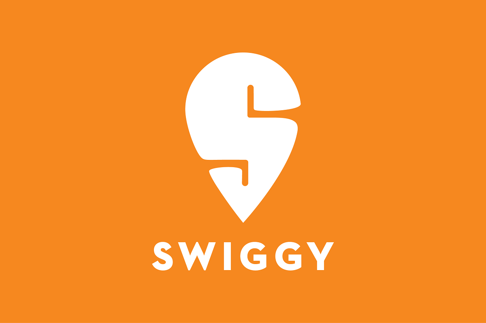

 SWIGGY About Login SignUp
It all started back in 2014 when two BITS Pilani graduates, Sriharsha Majety and Nandan Reddy decided they wanted to make life easier by changing the way India eats - all with just a tap! With their idea of 'hyperlocal food delivery', all they needed was the tech to power it and were introduced to Rahul Jaimini, who brought this vision to life with the first website. And with this, Swiggy was launched as a food ordering & delivery platform. In August of 2014, Swiggy began operations by signing up a few restaurants in Koramangala, Bengaluru. Soon enough, the first team of Hunger Saviors came into action to deliver food within 40 minutes. Shortly after, Swiggy raised its first round of funding and launched the app in May of 2015. Fun fact: The technology that delivers great food right to your doorstep was completely developed in-house! With love and support from consumers, Swiggy expanded far and wide, first through the entire city of Bengaluru and then across the entire country. As they say, the rest is history. Today, Swiggy is the leading food ordering and delivery platform in India. The innovative technology, large and nimble delivery service, and exceptional consumer focus at Swiggy enabled a host of benefits that includes lightning fast deliveries, live order tracking and no restrictions on order amount, all while having the pleasure of enjoying your favourite meal wherever you'd like it.